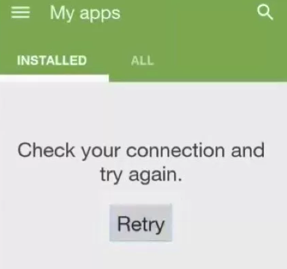
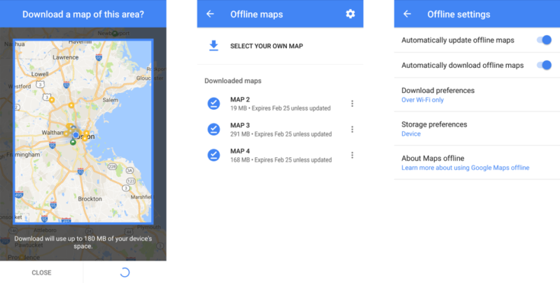
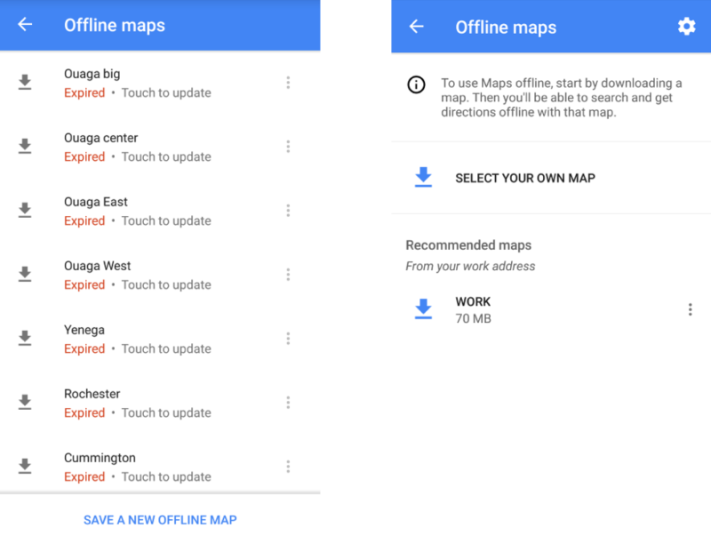
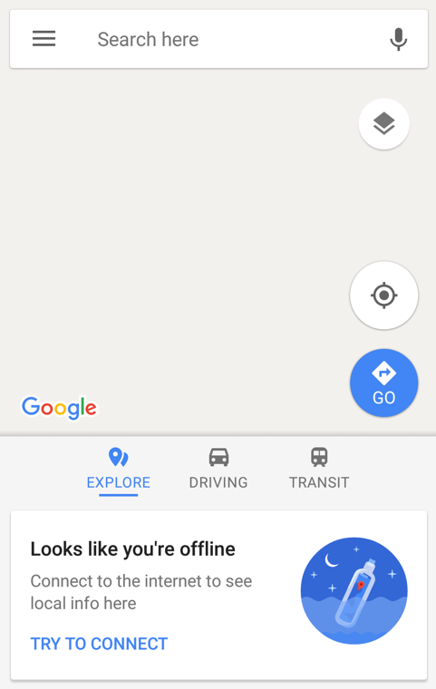

This is the first in a series of posts from Dimagi’s CTO exploring the engineering principles behind the team’s mobile apps.
Dimagi builds software products to make an impact in last-mile low-income settings around the world, and our dev team loves Open Source. While a lot of that loves stems from the same advantages that OSS offers to any software project, the truth is that there just aren’t a lot of folks who are working on the same technical problems that our team is. We have to stick together to get things done.

Stack Overflow isn’t exactly overflowing with advice on #lastmileclinicalworkflows
Although we’ve had some success with Open Source contributions to the community,1 it can be hard for sharing code alone to bootstrap success in the ICT4D space due to how unfamiliar its constraints are to most programmers. Well-structured code can convey the individual design decisions behind how a component was made, but it’s much more difficult to document the pervasive choices and patterns needed to make an app that functions in the context where our users work.
To help bridge that gap, I’m writing this series to share a primer on that ‘other half’ of the knowledge we’ve built up along with our code: the engineering principles our team adheres to when building mobile software. These provide our team with something like meta design patterns which give us the ability to resolve ambiguity early in our process and determine areas of technical focus.
In comparison to approaches like building libraries or frameworks to enforce best practices, a focus on principles has ensured that the summation of our 15 years of engineering experience could survive technology’s rapid evolution from PDAs to SMS to Nokia phones to Android devices. Having built the industry’s highest rated and most broadly used platform for frontline workers, I think this is an area where we’re uniquely positioned to advocate for that approach, and I hope you’ll find it helpful in closing the loop between code and practice.
Principle #1: We Build Offline First
Our most important guiding principle for our team is that we build software “offline first.”
To meet Dimagi’s mission, we need to produce high impact software for mission critical systems in environments where connectivity can’t be assumed. Our success depends on being able to accomplish amazing things on the ground with a device that is offline indefinitely.
While this requirement is more critical to our software team than it is for most teams, the importance of this principle should be viscerally easy to understand for anyone who’s ever had the audacity to take a subway and assume that their phone shouldn’t be reduced to a calculator the instant they reach the bottom of the stairs.

Sorry, doesn’t “installed” mean on the phone?
It’s easy to misinterpret this principle as being solely about writing code which doesn’t use the internet, but offline first doesn’t mean offline only. One of the most important expectations from this principle is how software integrates its online functionality. Apps needs to be explicit about the network being a feature, rather than an assumption, and be clear and verbose about its functioning. Frontline workers using CommCare often need to travel significant distances to gain access to a network and periodically sync their data, so they deserve a process that respects their time.
For us, offline first software needs to provide users with confidence that the software will continue to function offline, control over connectivity related features, and predictability for how the app behaves with and without a connection. I end up using mobile apps offline frequently and have experienced the distinct frustration that arises when software’s offline functionality lacks these properties. Unfortunately they are becoming a rarity even as offline features become more common.
Offline done (mostly) right
As a rare counterpoint, I have noticed very positive changes in how Google has been adapting the offline components of their maps app. Those changes provide a good contrast to the online-only direction in which many apps in the market are moving, and highlight the importance of these properties.
The current version of Google Maps has made a number of vital changes which elevate elements of the maps from being “available” offline to being useful offline. These aspects of the app can seem like very small things, but they are incredibly pro-user features which are a compromise from Google’s desire for a seamless and rapidly changing product.

In addition to letting you choose areas to download for offline use, the app now provides clear visibility into what data is available without a connection, even letting you view the boundaries of where the map was set. Providing first class access to these models is vital to users’ ability to predict how the app will function offline, and to control what is available.
Most importantly, the app now reveals its own limitations about the availability of those models, rather than providing cues to the user only when the app has failed to load the information it needs. The maps are available offline for 30 days, after which they need to be updated to be used. Although those updates are automatic by default, the app allows users to disable automatic updates and opt to update specific maps manually when needed. This kind of control is vital for users who have small amounts of data available (or limited connectivity windows) and need to be able to prioritize how to use available data services when they get them.
I’m quite impressed with Google’s direction overall. Product management techniques create an ever-present temptation to reduce control and predictability in favor of streamlining the strongest ‘common’ experience, so pushing the maps offering in the other direction shows a significant respect for their users and their needs.
So close, yet so far….
Despite these positive changes, there’s one final and critical element that illustrates the difference between useful offline features and building software offline first. While writing this post, I was taking screenshots from a phone I hadn’t used recently, and realized after a bit that I should accept a Play Store update to the latest version of the app for accuracy in its portrayal.
Notice anything different after the update?2

Offline Maps before and after an app update was applied
I wish I could say that this is my first experience where applying a Google Maps update completely wiped out my “offline” data, but unfortunately it isn’t. At least this time I was in our internet-connected office, and not offline on my way to the field in a remote and unfamiliar country, which was the case the first time my map data was removed after an automatic update.3
Beyond the technical decision to allow data to disappear, the divide in “offline v. offline first” product design is illustrated by what you see after starting Google Maps for the first time after one of these “update and wipe” events has occurred: nothing.

In addition to not retaining the maps after the update, there’s no notice that offline maps were removed or any indication that they should be re-downloaded or recovered manually4. All you get is a message suggesting that there’s no reason for you to be touching Google Maps without an internet connection.
I want to be fair to the team that built this functionality: Google Maps is an enormous, ever-moving target. I can’t even imagine the engineering challenge of building in offline capability as an isolated ‘feature,’ and it’s a tremendous achievement for the teams responsible to have produced something as useful as Offline Maps.
Coming from a perspective where phones and apps are used as essential daily tools offline, though, it’s hard to not see a disconnect between all of the work that has been done and what I would consider the most important priority when you are offline - retaining access to the service. It feels like a car that is built to turn a corner safely at 60mph in deep snow, but won’t start if the temperature is below freezing.
What “Offline First” means to our team
Ultimately, the defining characteristic of offline first software isn’t a specific technical pattern; it’s that the software is built to work when you need it to, not just when it’s convenient to. The significance of this being the first of our engineering principles is that there’s no other place it could be. When push comes to shove, every tradeoff of cost or effort has to lose to the necessity of high availability for our users.
That need introduces meaningful limitations on how we can work and what we can include as part of our platform. As one example, our team can’t easily integrate common tools like most of those offered by Firebase, since their offline capabilities are designed to “work even if your app temporarily loses a network connection,”5 rather than providing reliable mechanisms which support being offline for significant periods.
Committing to offline first means accepting that some features become too expensive to be worth building. Although we’ve performed multiple rounds of R&D on different ways of syncing multimedia along with user data, we still haven’t found a point where the volumes of data can practically be maintained wholly offline without investing enough engineering effort that it would need to be the core value proposition of the software.
Another drawback is that some features may now be too complex to be useful. Say you need to validate a user-entered ID for a model online. You could do so asynchronously, report back to the phone to flag the model, and then block future use of models that failed validation until corrected. After all of that, though, users may no longer understand that workflow well enough to find value in it.
Making software offline first is hard. It’s so hard, in fact, that it’s not worth it for most products due to these types of technical complexities, or due to the burden it places on the user to be aware of how it functions. It’s easy to understand why it’s not a priority for apps that let you play crossword puzzles.
But it’s our first and foremost priority every day. Because how important it is to you that your software was built offline first depends on how much you need that app when you pull your phone out of your pocket. We build software for people who need it to save lives, and we wouldn’t have it any other way.
Notes:
- 1. The very successful OpenDataKit project, for example, started as an adaptation of our JavaRosa engine from J2ME to Android. They are a great team, and we love collaborating with them.
- 2. You might be tempted to assume that the offline maps were cleared due all of the visible maps being expired (although that’s not much of a defense). I’ll proactively note that I did have some offscreen up-to-date maps downloaded as well, which said they were valid for 30 days in the UI, before I applied the APK update.
- 3. The chicken-and-egg problems associated with automated updates are familiar to all Android developers. Years after experiencing this for the first time I’m still not sure whether to feel vindicated that Google’s own engineers find it hard enough to solve that they still don’t, or annoyed that our small team is willing and able to keep our migrations working when Google’s teams don’t even bother.
- 4. This is reflective of one of the worst anti-user patterns that mobile app product techniques have levied on software. In contrast with other software, it is deemed uniquely acceptable for mobile consumer products to “reset” user experiences, where the software team makes a conscious decision to accept a broken continuity of use (like deleting data entered in the old UX) without providing users with cues to recover.Imagine if I had been online between applying this update and travelling. A simple note that my maps were wiped would have let me know I needed to proactively download them again, or at least to not anticipate them being available.Cues like this are a rarity, despite how cheap they are to provide and how little they detract from the user’s experience, in part because they invite blame on the product for not doing more. It would seem that humility is an important character trait for teams that build software which puts user needs before brand.
- 5. https://firebase.google.com/docs/database/android/offline-capabilities